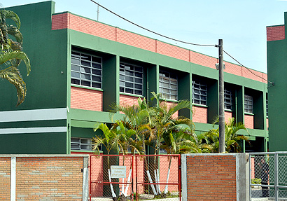

INFORMÁTICA PARA INTERNET
O QUE O ALUNO ESTUDA:
Desenvolve websites personalizados de acordo com as necessidades do cliente, propondo soluções eficazes. Realiza a manutenção de portais, sites e intranets, garantindo seu funcionamento adequado. Além
disso, cuida da identidade visual das páginas de empresas, customiza plataformas de conteúdo para web (como blogs e sites de comércio eletrônico) e gerencia bancos de dados relacionados aos websites.
Também adapta as páginas para suportar vídeos, áudios e funções que facilitem a acessibilidade, como comandos de voz. Otimiza imagens para uso na internet e cria layouts para mensagens enviadas por
e-mail,como newsletters ou e-mails de marketing. Essas atividades são essenciais para proporcionar uma experiência online agradável e eficiente aos usuários.
ONDE TRABALHAR:
Empresas de desenvolvimento de sites, sistemas e marketing digital são os principais empregadores para técnicos nessa área. Além disso, o profissional também pode optar por trabalhar de forma autônoma como freelancer,
oferecendo seus serviços a outras empresas e clientes.
HORARIOS DE AULA:
segunda, quarta e sexta: das 8:00 ás 16:30.
terça e quintas: das 8:00 ás 14:50.